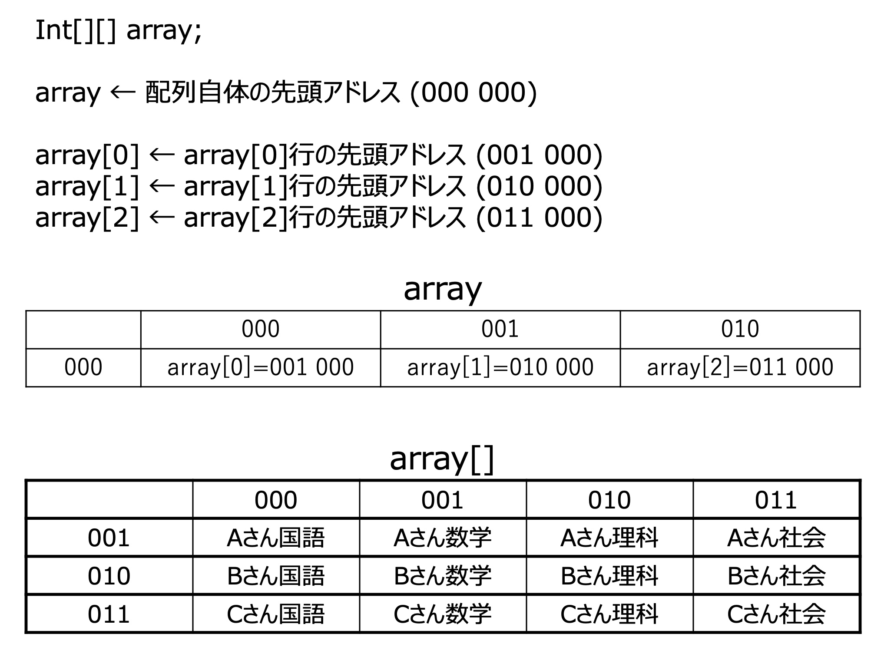
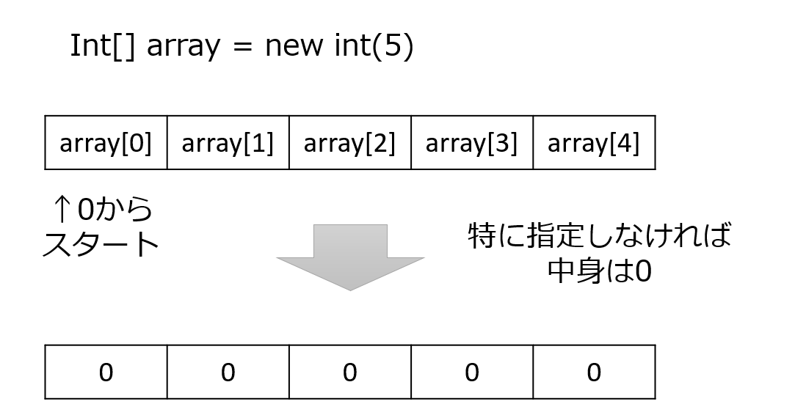

配列¶
配列とは¶
配列とは、あるデータ型の変数をまとめて保管するデータ構造のことです。 簡単に言うと個人のテストの結果(国語、算数、理科、社会)をまとめて保管するようなものです。 また個人だけではなく、クラス全体のテストの結果を2次元的に保管することもできます。
データ番号 |
中身 |
|---|---|
0 |
国語 |
1 |
算数 |
2 |
理科 |
3 |
社会 |
iの値 |
保持しているアドレス |
array[i][0] |
array[i][1] |
array[i][2] |
array[i][3] |
|---|---|---|---|---|---|
0 |
array[0] |
Aさん国語 |
Aさん算数 |
Aさん理科 |
Aさん社会 |
1 |
array[1] |
Bさん国語 |
Bさん算数 |
Bさん理科 |
Bさん社会 |
2 |
array[2] |
Cさん国語 |
Cさん算数 |
Cさん理科 |
Cさん社会 |
2次元の場合，少し複雑になりまして，array[][]のように書くのですが，
左側の[]が行，右側の[]が列を指定します．
例えば上の表で array[1][2]="Bさん算数" です．
アドレスの状況はというと
array：array[0]のアドレス
array[0]：array[0][0]のアドレス
array[1]：array[1][0]のアドレス
array[2]：array[2][0]のアドレス
というふうになっています．
図で言うとこんな感じです．※図中のアドレスは適当です．
読み飛ばしていいです． (難しいことを言うと，array[ ]は内部に配列を持っているような感じになります， つまり，二次元配列の変数は配列の配列という構造になっています．)

配列の宣言¶
配列の変数の宣言は多少の差異があります。
配列変数の宣言において配列であると明示
配列要素の作成
初期値は型によって0 / false / nullに設定される。
大きくこの二つです。普通の変数の場合は変数定義とともに要素も作成されていましたが、 配列の場合、いくつのデータをまとめて保管するかについても必要となるためこのような形となっています。
1. int[] array; //配列の準備
2. array = new int[5] //場所の確保、代入

要素の初期化¶
先ほど要素の初期値は型によって0 / false / nullに設定される という話をしましたが、それ以外の値を使いたい場合は以下のように宣言します。
int[] array = {60, 48, 100, 2};
配列に対する値の格納、出力¶
まとめて格納することは分かったがどうやって中のデータを
参照すればいいのか。
→添え字を使います。
添え字とは配列の内部に振った番号のことで、
単体の型を参照可能となる。
先ほどの例で int[5] としたが、この場合、
array[0], array[1], array[2], array[3], array[4]
とすることで配列内部を参照できます。この時注意すべきことは添え字は 0 から始まります。 これを用いて値の格納、出力ができます。
ちなみに添え字を 0~4 なのに 1~5 としたらコンパイルは通ります。 しかし、実行時にarray[5]がなく、エラーが起きます。
// 配列内部に値の格納
array[0] = 0;
array[3] = 3;
// 配列内部の値の出力
System.out.println(array[3]);
厳密な話¶
厳密にいうと配列変数自体はアドレス(どこに領域をとるか)を
持っています。つまりarray[0]は配列arrayのアドレスからintのデータ容量*0進んだ位置にあるデータをさしています。
以下のようなプログラムを実行してみます。 ついでに拡張for文も入れときます。
int[] array, array2; //配列の準備
array = new int[5] //場所の確保、代入
for(int i = 0;i < array.length;i++){
array[i] = i;
}
array2 = array; // array2の領域にarrayのアドレスを代入
for(int i: array2){ // 拡張for文です。配列の中身がiに入る。
System.out.println(i);
}
array2 = array; は**アドレス渡し(参照渡し)**と呼ばれています。
ここでは値ではなく、変数の格納場所つまり、アドレスを代入しています。
そのため、このプログラムの場合、ハードリンクのような状態となり、
arrayの変更がarray2に反映され、array2の変更もarrayに反映されます。
配列の中身だけコピーしたい場合はfor文で回すか 配列名.clone() などを使ってください。
添え字を変数で指定する¶
添え字は定数を使ってもいいのですが、 実際のところ変数を使うことが多いです。 というのも、ループ処理を行う場合において ループ変数などを使った方が適しているからです。 (定数を使う場合はループしない処理の場合に 使われることがあります。)
for(int i=0;i < array.length;i++){
array[i] = 0;
}